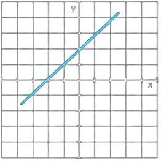
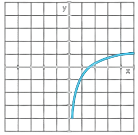
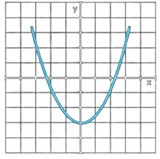

Learn Mathematics step by step in English & Sinhala
ඉංග්රීසි සහ සිංහල භාෂාවලින් ගණිතය ඉගෙන ගන්න
A Linear Equation is an equation where the highest power of the variable (usually x) is 1. When graphed, it forms a straight line.
විචල්යයේ ඉහළම බලය 1 වන සමීකරණ මෙයට අයත් වේ. මෙය ප්රස්තාරගත කළ විට සරල රේඛාවක් ලැබෙන බැවින් මෙයට "රේඛීය සමීකරණ" යැයි කියනු ලැබේ.
A Quadratic Equation is an equation where the highest power of the variable is 2. Its graph is a curve called a parabola.
මෙහි විචල්යයේ ඉහළම බලය 2 කි. මෙහි ප්රස්තාරය "පරාවලයක්" ලෙස හඳුන්වන වක්රයකි.
A Polynomial is an expression consisting of variables and coefficients, involving operations like addition, subtraction, and multiplication, with non-negative integer exponents.
බහුපදයක් යනු විචල්යයන් සහ සංගුණක එකතු කිරීම, අඩු කිරීම සහ ගුණ කිරීම මගින් සම්බන්ධ වූ ප්රකාශනයකි. මෙහි බලයන් සැමවිටම ධන පූර්ණ සංඛ්යා විය යුතුය.
5x³ - 2x² + x - 7
Linear Function
Constant Function

Absolute Value Function

Logarithmic Function
Exponential Function

Reciprocal Function

Goniometric Function

Quadratic Function
Cubing Function

An angle is formed when two lines meet at a common point called a vertex.
සරල රේඛා දෙකක් එකිනෙක හමුවන ලක්ෂ්යයකදී (ශීර්ෂය) කෝණයක් සෑදේ.
When the sum of two angles is equal to 90°.
(කෝණ දෙකක එකතුව 90° ක් වන විට.)
When the sum of two angles is equal to 180°.
(කෝණ දෙකක එකතුව 180° ක් වන විට.)
The sum is always 180°.
(සරල රේඛාවක් මත පිහිටි කෝණවල එකතුව 180° කි.)
When two lines cross, opposite angles are equal.
(සරල රේඛා දෙකක් කැපී ගිය විට සෑදෙන ප්රතිමුඛ කෝණ එකිනෙකට සමාන වේ.)
The sum of all angles around a point is 360°.
(ලක්ෂ්යයක් වටා ඇති සියලුම කෝණවල එකතුව 360° කි.)
A triangle is a closed shape with 3 sides and 3 angles. The sum of interior angles is always 180°
ත්රිකෝණයකට පාද 3ක් සහ කෝණ 3ක් ඇත. ඕනෑම ත්රිකෝණයක ඇතුළු කෝණවල එකතුව සැමවිටම 180° කි.
Types by Sides (පාද අනුව වර්ග):
Types by Angles (කෝණ අනුව වර්ග):
The line segment connecting the midpoints of two sides of a triangle is parallel to the third side and is exactly half the length of the third side.
(ත්රිකෝණයක පාද දෙකක මධ්ය ලක්ෂ්යයන් යා කරන සරල රේඛාව, තුන්වන පාදයට සමාන්තර වන අතර එහි දිග තුන්වන පාදයේ දිගින් අඩක් වේ.)
In a right-angled triangle, the square of the hypotenuse (the side opposite the right angle) is equal to the sum of the squares of the other two sides.
(සෘජුකෝණී ත්රිකෝණයක කර්ණයෙහි (සෘජුකෝණයට ඉදිරියෙන් ඇති දිගම පාදය) වර්ගය, අනෙක් පාද දෙකෙහි වර්ගවල එකතුවට සමාන වේ.)
Two triangles are congruent if they are identical in shape and size. There are four main cases to prove congruency.
(ත්රිකෝණ දෙකක් හැඩයෙන් සහ ප්රමාණයෙන් එකිනෙකට සම්පූර්ණයෙන්ම සමාන නම් ඒවා සර්වසම ත්රිකෝණ වේ. සර්වසමතාව ඔප්පු කිරීමට ප්රධාන අවස්ථා 4ක් ඇත)
All three sides of one triangle are equal to the three sides of another.
(එක් ත්රිකෝණයක පාද තුන අනෙක් ත්රිකෝණයේ පාද තුනට සමාන වීම.)
Two sides and the included angle (the angle between them) are equal.
(පාද දෙකක් සහ එම පාද අතර ඇති කෝණය සමාන වීම.)
Two angles and a corresponding side are equal.
(කෝණ දෙකක් සහ එක් පාදයක් සමාන වීම.)
In right-angled triangles, the hypotenuse and one other side are equal.
(සෘජුකෝණී ත්රිකෝණ දෙකක කර්ණය සහ තවත් එක් පාදයක් සමාන වීම.)
A circle is a set of points equidistant from a center point.
මධ්ය ලක්ෂ්යයක සිට සමාන දුරකින් පිහිටි ලක්ෂ්ය සමූහයකින් වෘත්තයක් සෑදේ.
The angle at the center is twice the angle at the circumference from the same arc.
(එකම චාපයකින් කේන්ද්රයේ සාදන කෝණය පරිධියේ සාදන කෝණය මෙන් දෙගුණයකි.)
Any angle drawn from the diameter to the circumference is 90°.
(විෂ්කම්භය මගින් පරිධියේ සාදන කෝණය සැමවිටම 90° කි.)
Opposite angles of a quadrilateral inside a circle add up to 180°.
(චක්රීය චතුරස්රයක සම්මුඛ කෝණවල එකතුව 180° කි.)
A tangent is always perpendicular (90°) to the radius at the point of contact.
(ස්පර්ශ ලක්ෂ්යයේදී අරය සහ ස්පර්ශකය අතර කෝණය සැමවිටම 90° කි.)
In a right-angled triangle, we use the following ratios:
(සෘජුකෝණී ත්රිකෝණයකදී අපි මෙම අනුපාත භාවිතා කරමු:)
These are the inverses of the basic ratios:
(මේවා මූලික අනුපාතවල පරස්පරයන් වේ.)
These formulas are true for any angle θ:
(මෙම සූත්ර ඕනෑම θ කෝණයක් සඳහා සත්ය වේ.)
These are used for any type of triangle (not just right-angled):
(මේවා ඕනෑම ත්රිකෝණයක් සඳහා භාවිතා කළ හැක (සෘජුකෝණී නොවන ත්රිකෝණ සඳහාද).)
a² = b² + c² -2bc cos A
It is helpful to remember these common values:
(මෙම පොදු අගයන් මතක තබා ගැනීම ඉතා ප්රයෝජනවත් වේ.)
| Angle (θ) | sin θ | cos θ | tan θ |
|---|---|---|---|
| 0° | 0 | 1 | 0 |
| 30° | |||
| 45° | 1 | ||
| 60° | √3 | ||
| 90° | 1 | 0 | Undefined (නිශ්චිත නැත) |
Limits are the foundation of calculus. They describe the value a function approaches as the input (x) gets closer and closer to a specific number.
(කලනයේ පදනම සීමා වේ. යම් ශ්රිතයකට ලබාදෙන අගය (x) කිසියම් නිශ්චිත අගයකට ඉතා ආසන්න වන විට, එම ශ්රිතය ලඟා වන අගය මෙයින් විස්තර වේ.)
Differentiation is used to find the instantaneous rate of change or the gradient (slope) of a curve at a given point.
(අවකලනය මගින් යම් ප්රස්තාරයක හෝ ශ්රිතයක කිසියම් ලක්ෂ්යයක පවතින අනුක්රමණය හෝ වෙනස් වීමේ වේගය මැනිය හැකිය.)
Integration is the reverse process of differentiation. It is primarily used to find the area under a curve.
(අනුකලනය යනු අවකලනයේ ප්රතිවිරුද්ධ ක්රියාවලියයි. වක්රයකින් වට වූ වර්ගඵලය සෙවීමට මෙය ප්රධාන වශයෙන් භාවිතා කරයි.)
It is the ratio of the number of favorable outcomes to the total number of possible outcomes.
සිදුවීමක් සිදුවීමේ හැකියාව මැනීම මෙහිදී සිදු කෙරේ. හිතකර ප්රතිඵල සංඛ්යාව මුළු ප්රතිඵල සංඛ්යාවෙන් බෙදීමෙන් මෙය ලබා ගනී.
This applies to dependent events where the occurrence of one event affects the probability of another.
එක් සිදුවීමක් සිදුවීම තවත් සිදුවීමක සම්භාවිතාව කෙරෙහි බලපාන අවස්ථා මෙයට අයත් වේ.
Discrete Random Variables
(විවික්ත අහඹු විචල්ය)
These are variables that have a finite or countable number of possible values. You can count them (1, 2, 3...).
Continuous Random Variables
(අඛණ්ඩ අහඹු විචල්ය)
These variables can take any value within a given range or interval. They are usually measured rather than counted.
The mean is calculated by summing all the individual values in a data set and dividing that total by the number of values present.
දත්ත පද්ධතියක ඇති සියලුම අගයන්ගේ එකතුව, එම දත්ත සංඛ්යාවෙන් බෙදූ විට ලැබෙන සාමාන්ය අගය මධ්යන්යය ලෙස හැඳින්වේ.
To find the median, you must first sort the data in ascending or descending order. If there is an odd number of values, the median is the middle one. If there is an even number, it is the average of the two middle values.
දත්ත ආරෝහණ හෝ අවරෝහණ පිළිවෙලට සැකසූ විට මැදින්ම ඇති අගය මධ්යස්ථය ලෙස හැඳින්වේ.
The mode is the value that appears most often. A data set can have one mode, more than one mode (multimodal), or no mode at all if all values appear only once.
දත්ත පද්ධතියක වැඩිම වාර ගණනක් වාර්තා වී ඇති අගය මාතය ලෙස හැඳින්වේ.
A Vector is a quantity that has both a magnitude (size) and a direction. Unlike scalars (like mass or time), you cannot describe a vector without saying which way it is pointing.
දෛශිකයක් යනු විශාලත්වයක් මෙන්ම දිශාවක් ද පවතින රාශියකි. ස්කන්ධය හෝ කාලය වැනි අදීශ රාශි මෙන් නොව, දෛශිකයක් විස්තර කිරීමේදී එය කුමන දිශාවකට යොමු වී ඇත්ද යන්න පැවසීම අත්යවශ්ය වේ.
There are several specific types of vectors used in mathematics and physics.
ගණිතයේදී සහ භෞතික විද්යාවේදී භාවිතා වන ප්රධාන දෛශික වර්ග කිහිපයකි.
Zero Vector (ශුන්ය දෛශිකය): A vector with zero magnitude and no specific direction (denoted as 0).
Unit Vector (ඒකක දෛශිකය): A vector that has a magnitude of exactly 1. Standard unit vectors are î, ĵ, k̂ for the x, y, and z axes.
(විශාලත්වය හරියටම 1 ක් වන දෛශික ඒකක දෛශික ලෙස හැඳින්වේ.)
Equal Vectors (සමාන දෛශික): Two vectors are equal if they have the same magnitude AND the same direction.
(දෛශික දෙකක විශාලත්වය සහ දිශාව යන දෙකම සමාන නම් ඒවා සමාන දෛශික වේ.)
When adding two vectors, we find the resultant vector. If we have a = (x1, y1) and b = (x2, y2), then:
දෛශික දෙකක් එකතු කළ විට අපට සම්ප්රයුක්ත දෛශිකය ලැබේ.
Multiplying a vector by a scalar (a number) changes its magnitude but usually keeps the same direction (or exactly opposite if the number is negative).
දෛශිකයක් සංඛ්යාවකින් (අදීශයකින්) ගුණ කළ විට එහි විශාලත්වය වෙනස් වේ.
The Dot Product of two vectors results in a scalar (a simple number), not another vector. It measures how much one vector points in the direction of another.
දෛශික දෙකක අදීශ ගුණිතයෙන් ලැබෙන්නේ තවත් දෛශිකයක් නොව අදීශයක් (සංඛ්යාවක්) පමණි.
Vectors are essential in fields like physics, engineering, and computer graphics.
භෞතික විද්යාව, ඉංජිනේරු විද්යාව සහ පරිගණක ග්රැෆික්ස් වැනි ක්ෂේත්රවල දෛශික අත්යවශ්ය වේ.